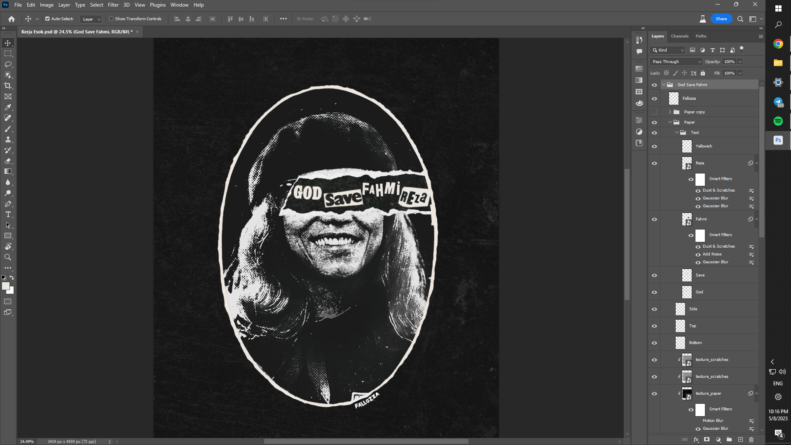

Home
About Me
Skills
Certification
Contact Me

Adobe Photoshop
Photo Retouching: Expertise in retouching and enhancing photographs to improve their quality and aesthetics.
Image Composition: Skillful in combining multiple images and elements to create captivating collages and compositions.
Photo Manipulation: Experienced in creatively altering and transforming images while maintaining a realistic look.
Photo Effects: Applying various filters, effects, and styles to images for artistic and thematic purposes.
Adobe Illustrator
Logo Design: Creating unique and memorable logos for brands and businesses using Illustrator's vector tools.
Vector Illustration: Skillful in creating detailed and scalable illustrations for various purposes, such as books, websites, and marketing materials.
Infographic Design: Creating informative and visually engaging infographics to present data and complex information.
Adobe Premiere Pro & After Effect
Video Editing: Proficient in editing videos, including cutting and arranging clips, adding transitions, and creating a cohesive narrative.
Audio Editing: Skillful in working with audio tracks, adjusting volume levels, and synchronizing audio with video.
Motion Design: Proficient in creating visually dynamic motion graphics, animations, and visual effects.
Keyframe Animation: Skilled in using keyframes to animate elements, giving them movement and life.